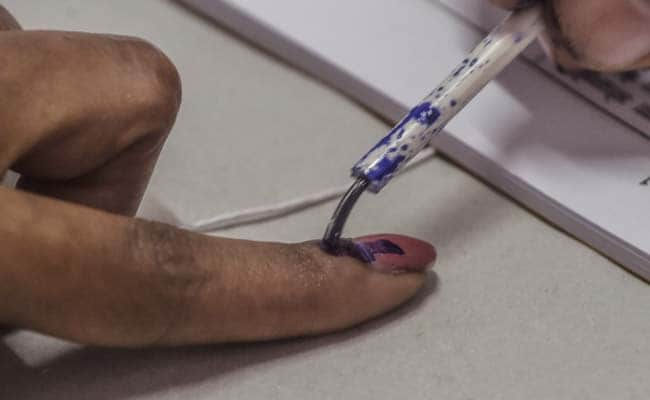
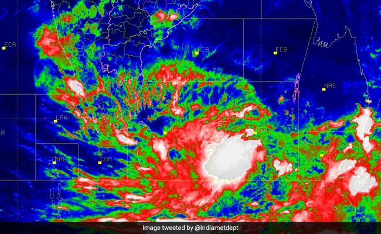
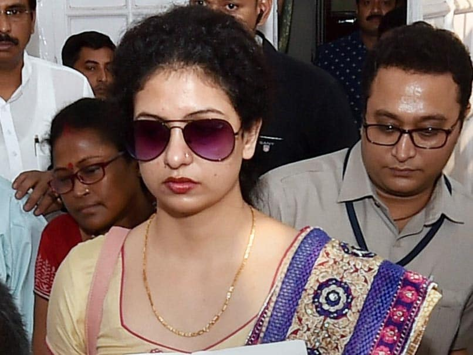

Top Stories

"Scandalous": Congress Leader Says He Removed Voter Ink With Nail Polish Remover
Manohar Parrikar's Son, Not Named For Bypolls, Says Will Campaign For BJP

"Praying For Everyone's Safety," Tweets PM Modi As Cyclone Fani Nears

Mohd Shami's Wife Arrested After High Drama At In-Laws', Released Later
Manohar Parrikar's Son, Not Named For Bypolls, Says Will Campaign For BJP
"Praying For Everyone's Safety," Tweets PM Modi As Cyclone Fani Nears
Mohd Shami's Wife Arrested After High Drama At In-Laws', Released Later